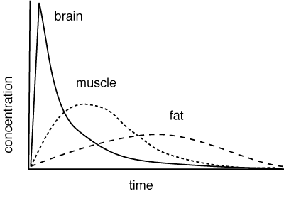

Distribution
Most drugs, apart from those appplied to the site of action, are distributed around the body by the blood, in many cases bound to plasma proteins. Tissues with high blood flow, such as the brain, will have more drug distributed to them initially than tissues with low blood flow such as fat. Drugs still have to cross membranes to get to the target tissue in a similar process as in absorption; the blood brain barrier keeps most drugs out. Disease can alter this, eg in heart disease, the blood flow to all tissues is reduced; inflammation usually increases the bood flow to the affected tissue. Drugs are not usually evenly distributed throughout the body; they are usually concentrated in theoretical compartments. Some idea of where the drug goes can be obtained from the volume of distribution. |
• drugs are usually distributed from the site of administration to the site of action via the blood. • many drugs bind to plasma proteins and are unavailable for action or metabolism. • drugs are not usually evenly distributed throughout the body. • every drug has a volume of distribution which can be useful to know when calculating doses |
|
 Distribution to different tissues depends on blood flow, among other things. |
Blood brain barrier Protein binding Compartments Volume of distribution |
|
| 3 Pharmacokinetics index |
| |
copyright
Massey University
|